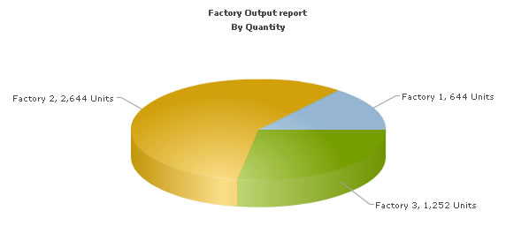
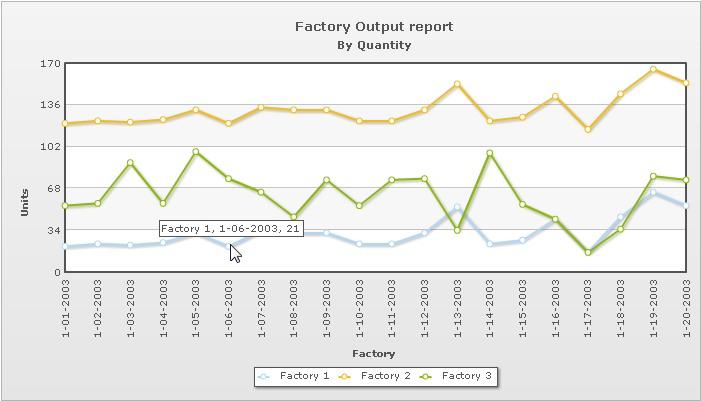

In this section, we will show you how to use FusionCharts XT and JSP to plot charts from data contained in a database. Here, we will do the following:
- Create a pie chart to show "Production by Factory" by initially using the Data String method
- Convert the chart to use the Data URL method
- Create a multi-series line chart from database
For the sake of ease, we will use MySQL Database. The database is present in Download Package > Code > J2EE > DB folder. You can, however, use any database with FusionCharts XT including MS Access, MySQL, MS SQL, Oracle. Database creation script for MySQL is also present in the same folder.
Before you go further with this page, we recommend you to please see the previous section Basic Examples as we start off from concepts explained in that page.
The code examples contained in this page are present
in Download Package > Code > J2EE > DBExample
folder.
The database scripts are present in Download
Package > Code > J2EE > DB.
Before we code the JSP pages to retrieve data, let's quickly have a look at the database structure.

The database contains just two tables:
- Factory_Master: To store the name and id of each factory
- Factory_Output: To store the number of units produced by each factory for a given date.
For demonstration, we have fed some dummy data in the database. Let's now shift our attention to the JSP page that will interact with the database, fetch data and then render a chart.
- The database configuration is present in the file Download Package > Code > JSP > META-INF > context.xml file. Here we need to specify the database name, user name and password to access the database. We have used the MySQL database for our examples. We assume that you have created the database with the name factorydb, username root with no password.
- Once this is done, we need to create the required tables. The SQL script "FactoryDBCreation.sql" present in the folder Download Package > Code > JSP > DB will create the database with two tables and sample data. Note that these scripts will not create foreign key relationships. You will have to manually alter the table to create the relationship, if you think necessary.
- Once this is done, we need to create the tables required for the UTF8 examples. The required SQL script "UTFExampleTablesCreation.sql" is present in the Download Package > Code > JSP > DB folder. You could run this script in your MySQL - this will alter the database to use UTF8 as the default character set, create the Japanese_Factory_Master table and insert sample data into them.
The JSP page for Data String method example is named as BasicDBExample.jsp (in DBExample folder). It contains the following code:
<%@ taglib prefix="c" uri="http://java.sun.com/jsp/jstl/core" %>
<%@ taglib prefix="tags" tagdir="/WEB-INF/tags" %>
<%@ taglib uri="http://www.fusioncharts.com/jsp/core" prefix="fc" %>
<%@ taglib prefix="sql" uri="http://java.sun.com/jsp/jstl/sql" %>
<jsp:useBean id="factoriesBean" class="com.fusioncharts.sampledata.FactoriesBean" />
<c:set var="folderPath" value="../../FusionCharts/" />
<c:set var="title" value="FusionCharts - Database Example" scope="request" />
<c:set var="header1" value="FusionCharts Database Example" scope="request" />
<c:set var="jsPath" value="${folderPath}" scope="request"/>6
<sql:setDataSource dataSource="jdbc/FactoryDB"/>
<c:set var="strXML" value="<chart caption='Factory Output report' subCaption='By Quantity'
pieSliceDepth='30' showBorder='1' formatNumberScale='0' numberSuffix=' Units' animation='${animateChart}'>"/>
<c:set var="strQuery" value="select * from Factory_Master"/>
<sql:query var="entries" sql="${strQuery}">
</sql:query>
<c:forEach var="row" items="${entries.rows}">
<c:set var="factoryId" value="${row.FactoryId}"/>
<c:set var="factoryName" value="${row.FactoryName}"/>
<c:set var="strQuery2" value="select sum(Quantity) as TotOutput from Factory_Output where FactoryId=${factoryId}"/>
<sql:query var="factoryDetailEntries" sql="${strQuery2}">
</sql:query>
<c:forEach var="detailRow" items="${factoryDetailEntries.rows}">
<c:set var="totalOutput" value="${detailRow.TotOutput}"/>
<c:set var="setElem" value="<set label='${factoryName}' value='${totalOutput}' />"/>
<c:set var="strXML" value="${strXML}${setElem} "/>
</c:forEach>
</c:forEach>
<c:set var="strXML" value="${strXML}</chart> "/>
<tags:template2>
<!-- Create the chart - Pie 3D Chart with data contained in bean -->
<fc:render chartId="${factoriesBean.chartId}" swfFilename="${folderPath}${factoriesBean.filename}"
width="${factoriesBean.width}" height="${factoriesBean.height}" debugMode="false"
registerWithJS="false" xmlData="${strXML}" />
</tags:template2>
The following actions are taking place in this code:
- We first include the JavaScript class to enable easy embedding of FusionCharts. This is achieved by setting the value for the variable jsPath, so that the template can include the script.
<c:set var="folderPath" value="../../FusionCharts/"/> <c:set var="jsPath" value="${folderPath}" scope="request"/>
- Next, we declare the datasource for the database connection. For this, we have used sql tags from jstl. Here the data source is jdbc/FactoryDB.
<sql:setDataSource dataSource="jdbc/FactoryDB"/>
This data source has been defined in context.xml in the application.
- We then execute the query to get the list of all the factories and their total output from the database, using sql:query tag.
Then, we execute the queries to get list of factories:
<c:set var="strQuery" value="select * from Factory_Master"/> <sql:query var="entries" sql="${strQuery}"> </sql:query>We loop through the resultset of this query (list of factories) and within the loop, we execute another query to get the total output for the particular factory:
<c:set var="strQuery2" value="select sum(Quantity) as TotOutput from Factory_Output where FactoryId=${factoryId}"/> <sql:query var="factoryDetailEntries" sql="${strQuery2}"> </sql:query>Thus, we have seen how to use jstl sql tags to get a Connection in a jsp and run queries.
- Thereafter, we generate the XML data document by iterating through the resultset and store it in strXML variable.
- Finally, we render the chart by using the fc:render tag and passing strXML and other attributes to it .
Note that in this jsp, we have written the complete code for retrieving data in the jsp itself. Ideally, the database connection and data retrieval code should be present in the bean class.
In our other database examples, we have used this approach.
When you now run the code, you will get an output as under:

Let's now convert this example to use Data URL method. As previously explained, in Data URL mode, you need two pages:
- Chart Container Page - The page which embeds the HTML code to render the chart. This page also tells the chart where to load the data from. We will name this page as Default.jsp.
- Data Provider Page - This page provides the XML data to the chart. We will name this page as PieData.jsp
The pages in this example are contained in Download Package > Code > JSP > DB_dataURL folder.
Default.jsp contains the following code to render the chart:
<%@ taglib prefix="c" uri="http://java.sun.com/jsp/jstl/core" %>
<%@ taglib prefix="tags" tagdir="/WEB-INF/tags" %>
<%@ taglib uri="http://www.fusioncharts.com/jsp/core" prefix="fc" %>
<%@ taglib uri="http://www.fusioncharts.com/jsp/functions" prefix="fchelper" %>
<%@page import="com.fusioncharts.FusionChartsHelper" %>
<jsp:useBean id="chartData" class="com.fusioncharts.sampledata.DynamicRenderData"/>
<c:set var="animateChart" value="${param.animate}"/>
<c:if test="${empty animateChart}">
<c:set var="animateChart" value="1"/>
</c:if>
<c:set var="folderPath" value="../../FusionCharts/"/>
<c:set var="title" value="FusionCharts - dataURL and Database Example" scope="request"/>
<c:set var="header1" value="FusionCharts - Database dataURL Example" scope="request"/>
<c:set var="header2" value="Click on any pie slice to slice it out.Or, right click to enable
rotation mode." scope="request"/>
<c:set var="jsPath" value="${folderPath}" scope="request"/>
<c:set var="urlWithParams" value="${chartData.url}?animate=${animateChart}"/>
<tags:template2>
<!-- Create the chart - Pie 3D Chart with data got from another jsp -->
<fc:render chartId="${chartData.chartId}" swfFilename="${folderPath}${chartData.filename}"
width="${chartData.width}" height="${chartData.height}" debugMode="false"
registerWithJS="false" xmlUrl="${urlWithParams}" />
</tags:template2> In this page,
- The path (jsPath) to the folder containing the JavaScript files is specified, so that the template tag file can include the required file.
- The value of animateChart is obtained from the request and used to set the animation to true or false.
<c:set var="animateChart" value="${param.animate}"/> <c:if test="${empty animateChart}"> <c:set var="animateChart" value="1"/> </c:if>
- The initial URL to the jsp file which will provide the data is obtained from the bean com.fusioncharts.sampledata.DynamicRenderData. The value for URL is declared as follows:
protected String url="PieData.jsp";
The URL to the xml data is constructed with parameters and then encoded.
<c:set var="urlWithParams" value="${chartData.url}?animate=${animateChart}"/>Since we are using the fc:render tag, we did not encode the URL with parameters. In case we use the fc:renderHTML tag, then we have to encode the URL before providing it to the tag. This can be done as shown below:
<c:set var="encodedURL" value="${fchelper:encodeDataURL(urlWithParams,true)}"/>Here, we have used another tag library prefixed as fchelper. encodeDataURL. This is a function defined by the tag library which can be used to encode the URL before providing it to the fc:renderHTML tag.
- The xmlUrl string with value PieData.jsp?animate=1 is then provided to the fc:render tag.
- Finally, we render the chart using the fc:render tag.
When you view this page, you'll get the same output as before.
PieData.jsp contains the following code to output XML Data:
<%@ taglib prefix="c" uri="http://java.sun.com/jsp/jstl/core" %>
<%@ taglib prefix="sql" uri="http://java.sun.com/jsp/jstl/sql" %>
<sql:setDataSource dataSource="jdbc/FactoryDB"/>
<c:set var="animateChart" value="${param.animate}"/>
<c:set var="strXML" value="<chart caption='Factory Output report' subCaption='By Quantity'
pieSliceDepth='30' showBorder='1' formatNumberScale='0' numberSuffix=' Units' animation='${animateChart}'>"/>
<c:set var="strQuery" value="select * from Factory_Master"/>
<sql:query var="entries" sql="${strQuery}">
</sql:query>
<c:forEach var="row" items="${entries.rows}">
<c:set var="factoryId" value="${row.FactoryId}"/>
<c:set var="factoryName" value="${row.FactoryName}"/>
<c:set var="strQuery2" value="select sum(Quantity) as TotOutput from
Factory_Output where FactoryId=${factoryId}"/>
<sql:query var="factoryDetailEntries" sql="${strQuery2}">
</sql:query>
<c:forEach var="detailRow" items="${factoryDetailEntries.rows}">
<c:set var="totalOutput" value="${detailRow.TotOutput}"/>
<c:set var="setElem" value="<set label='${factoryName}' value='${totalOutput}' />"/>
<c:set var="strXML" value="${strXML}${setElem} "/>
</c:forEach>
</c:forEach>
<c:set var="strXML" value="${strXML}</chart> "/>
<c:set target="${pageContext.response}" property="contentType" value="text/xml"/>
<c:out value="${strXML}" escapeXml="false"/>
In the above page,
- We first request the animate property which has been passed to it (as part of request parameter in xmlUrl provided to the chart )
- We query the database to get the total output of each factory.
- We generate the xml data and store it in strXML variable
- Finally, we write this data to output stream without any HTML tags. The contentType for this page is set to "text/xml".
Database connection can be achieved in two ways:
- By using the jstl sql tags in the jsp as shown in the above example.
- By connecting to database from a java bean using the DBConnection class.
Using jstl tags, we first define the data source as shown:
<sql:setDataSource dataSource="jdbc/FactoryDB"/>
We have seen how to use the jstl sql tags to get a Connection in a jsp and run queries. Now, let us see how to achieve the same result using the DBConnection class in a bean.
The JSP page using bean with DBConnection class is named as BasicDBExampleUsingBean.jsp (in the DBExample folder).
The code in the jsp is kept minimum and all the work of connecting to the database and generating the XML is done in the bean class com.fusioncharts.sampledata.FactoriesBeanWithoutLink.
Hence, the jsp mainly has the JavaScript path set and the fc:render tag with attribute values obtained from the bean.
Now, let us take a look at the relevant code in the bean:
private String getFactoryXML(){
//strXML will be used to store the entire XML document generated
String strXML="";
try{
DBConnection dbConn = new DBConnection();
Connection oConn= dbConn.getConnection();
//Database Objects - Initialization
Statement st1=null,st2=null;
ResultSet rs1=null,rs2=null;
String strQuery="";
Map<String,String> chartAttributes=new HashMap<String, String>();;
chartAttributes.put("caption", "Factory Output report");
chartAttributes.put("subCaption", "By Quantity");
chartAttributes.put("pieSliceDepth", "30");
chartAttributes.put("showBorder", "1");
chartAttributes.put("formatNumberScale", "0");
chartAttributes.put("numberSuffix", " Units");
DOMHelper domHelper = new DOMHelper();
Document chartDoc = domHelper.getDocument();
Element rootElement = chartDoc.createElement("chart");
domHelper.addAttributesToElement(rootElement, chartAttributes);
//Iterate through each factory
strQuery = "select * from Factory_Master";
st1=oConn.createStatement();
rs1=st1.executeQuery(strQuery);
String factoryId=null;
String factoryName=null;
String totalOutput="";
while(rs1.next()) {
totalOutput="";
factoryId=rs1.getString("FactoryId");
factoryName=rs1.getString("FactoryName");
//Now create second recordset to get details for this factory
strQuery = "select sum(Quantity) as TotOutput from Factory_Output where FactoryId=" + factoryId;
st2=oConn.createStatement();
rs2 = st2.executeQuery(strQuery);
if(rs2.next()){
totalOutput=rs2.getString("TotOutput");
}
//Generate <set label='..' value='..'/>
Element setElem = chartDoc.createElement("set");
setElem.setAttribute("label", factoryName);
setElem.setAttribute("value", totalOutput);
rootElement.appendChild(setElem);
//close the resultset,statement
//enclose them in try catch block
try {
if(null!=rs2){
rs2.close();
rs2=null;
}
}catch(java.sql.SQLException e){
System.out.println("Could not close the resultset");
}
try{
if(null!=st2) {
st2.close();
st2=null;
}
}catch(java.sql.SQLException e){
System.out.println("Could not close the statement");
}
//Finally, close <chart> element
chartDoc.appendChild(rootElement);
strXML=domHelper.getXMLString(chartDoc);
//close the resultset,statement,connection
//enclose them in try catch block
try {
if(null!=rs1){
rs1.close();
rs1=null;
}
}catch(java.sql.SQLException e){
System.out.println("Could not close the resultset");
}
try {
if(null!=st1) {
st1.close();
st1=null;
}
}catch(java.sql.SQLException e){
System.out.println("Could not close the statement");
}
try {
if(null!=oConn) {
oConn.close();
oConn=null;
}
}catch(java.sql.SQLException e){
System.out.println("Could not close the connection");
}
}catch(java.sql.SQLException e){
System.out.println("Could not close the statement");
}
return strXML;
}
The above method getFactoryXML() constructs the XML and it is called within the getXml() method.
In order to get a connection using the Java class DBConnection, first you need to import the DBConnection class.
import com.fusioncharts.database.DBConnection;
Wherever a connection to the database is required, call the getConnection method in the DBConnection class as follows.
Connection oConn=dbConn.getConnection();
Once the connection is obtained, use it to create the Statements, ResultSet objects, and finally close it. This can be done in a try-catch block in the following manner.
try {
if(null!=oConn) {
oConn.close();
oConn=null;
}
}catch(java.sql.SQLException e){
//do some exception handling
System.out.println("Could not close
the connection");
}So, this is how we use the DBConnection class to get a Connection. After getting the connection, you can perform the queries to get the data. All the work of configuring the database name, MySQL database Datasource name (that is, the complete database related configuration) is done in the configuration file - context.xml.
The logic for iterating through the factories to obtain the total output for each factory is similar to our earlier examples. The only difference now is the way the XML is constructed. Here, we have used DOM to create the XML instead of string concatenation.
For this purpose, we have used the com.fusioncharts.sampledata.DOMHelper class. This is a simple class which has DOM related functions to get the document, output the document and get the XML document as a string.
The code snippets involving the usage of DOM to construct the XML are shown below:
Map<String,String> chartAttributes=new HashMap<String, String>();;
chartAttributes.put("caption", "Factory Output report");
chartAttributes.put("subCaption", "By Quantity");
chartAttributes.put("pieSliceDepth", "30");
chartAttributes.put("showBorder", "1");
chartAttributes.put("formatNumberScale", "0");
chartAttributes.put("numberSuffix", " Units");
DOMHelper domHelper = new DOMHelper();
Document chartDoc = domHelper.getDocument();
Element rootElement = chartDoc.createElement("chart");
domHelper.addAttributesToElement(rootElement, chartAttributes);
The above code creates the root element <chart> and adds the caption, subCaption and other attributes to it. Next, the children to the <chart> element are added. In the single-series chart, we will have <set> elements as the children to the <chart> tag. This is done for each factory in a loop.
// "<set label="+factoryName+" value="+totalOutput"/>"
Element setElem = chartDoc.createElement("set");
setElem.setAttribute("label", factoryName);
setElem.setAttribute("value", totalOutput);
rootElement.appendChild(setElem);
Finally, add the chart element to the document and obtain the document as an xml string to be provided to fc:render tag:
chartDoc.appendChild(rootElement);
strXML=domHelper.getXMLString(chartDoc);
Let's now see how we can create a multi-series chart from database. This is no different from creating the Pie chart we saw above.
All you need to do is to build proper XML from the database that you query from your database. Multi-series charts have a different data format from the format of an XML for a single-series chart like pie.
The jsp code will be similar to all the examples we have seen before. We will use the bean MSFactoriesData as shown:
JSP: MSDBExample.jsp <jsp:useBean id="factoriesBean" class="com.fusioncharts.sampledata.MSFactoriesData" />
And then, rendering the chart is also similar:
<fc:render chartId="${factoriesBean.chartId}" swfFilename="${folderPath}${factoriesBean.filename}"
width="${factoriesBean.width}" height="${factoriesBean.height}"
debugMode="false" registerWithJS="false" xmlData="${factoriesBean.xml}" />The fields in the bean and the code in the bean to construct datasetXML and categoriesXML are as shown:
protected String chartId = "FactorySum";
protected String width = "700";
protected String height = "400";p
protected String filename = ChartType.MSLINE.getFileName(); protected String xml = null; /** * Build the xml for the categories * @param chartDoc * @param rootElement * @param categoriesResultSet * @throws SQLException */ private void buildCategoriesXML(Document chartDoc, Element rootElement, ResultSet categoriesResultSet) throws SQLException { Element categoriesElem = chartDoc.createElement("categories"); if (categoriesResultSet.next()) { while (categoriesResultSet.next()) { String datePro = categoriesResultSet.getString("DatePro"); Element categoryElem = chartDoc.createElement("category"); categoryElem.setAttribute("label", datePro); categoriesElem.appendChild(categoryElem); } rootElement.appendChild(categoriesElem); } } /** * Build the xml for datasets * @param chartDoc * @param rootElement * @param datasetResultSet * @throws SQLException */ private void buildDatasetXML(Document chartDoc, Element rootElement, ResultSet datasetResultSet) throws SQLException { String factoryName = null; String previousFactoryName = null; Element datasetElem = null; if (datasetResultSet.next()) { while (datasetResultSet.next()) { factoryName = datasetResultSet.getString("FactoryName"); if (!factoryName.equals(previousFactoryName)) { datasetElem = chartDoc.createElement("dataset"); datasetElem.setAttribute("seriesName", factoryName); } String quantity = datasetResultSet.getString("Quantity"); Element setElem = chartDoc.createElement("set"); setElem.setAttribute("value", quantity); datasetElem.appendChild(setElem); if (!factoryName.equals(previousFactoryName)) { rootElement.appendChild(datasetElem); } previousFactoryName = factoryName; } } }
The code to construct the multi-series xml from the database (the getFactoryXML()method):
// strXML will be used to store the entire XML document generated String strXML = ""; try { DBConnection dbConn = new DBConnection(); Connection oConn = dbConn.getConnection(); // Database Objects - Initialization Statement st1 = null, st2 = null; ResultSet rs1 = null, rs2 = null; String strCategoryQuery = ""; String strQuery = ""; Map<String, String> chartAttributes = new HashMap<String, String>(); chartAttributes.put("caption", "Factory Output report"); chartAttributes.put("subCaption", "By Quantity"); chartAttributes.put("xAxisName", "Factory"); chartAttributes.put("yAxisName", "Units"); chartAttributes.put("showValues", "0"); chartAttributes.put("animation", "1"); chartAttributes.put("formatNumberScale", "0"); chartAttributes.put("rotateValues", "1"); DOMHelper domHelper = new DOMHelper(); Document chartDoc = domHelper.getDocument(); Element rootElement = chartDoc.createElement("chart"); domHelper.addAttributesToElement(rootElement, chartAttributes); // Generate the chart element // Iterate through each factory strCategoryQuery = "select distinct DATE_FORMAT(factory_output.DatePro,'%c-%d-%Y') as DatePro from factory_output order by DatePro"; strQuery = "select factory_master.FactoryName, DATE_FORMAT(factory_output.DatePro,'%c-%d-%Y') as DatePro, factory_output.Quantity from factory_master factory_master, factory_output factory_output where factory_output.FactoryID = factory_master.FactoryId order by factory_output.FactoryID, factory_output.DatePro";st1 = oConn.createStatement(); rs1 = st1.executeQuery(strCategoryQuery); buildCategoriesXML(chartDoc, rootElement, rs1); st1 = oConn.createStatement(); rs1 = st1.executeQuery(strCategoryQuery); // close the resultset,statement // enclose them in try catch block try { if (null != rs1) { rs1.close(); rs1 = null; } } catch (java.sql.SQLException e) { System.out.println("Could not close the resultset"); } try { if (null != st1) { st1.close(); st1 = null; } }catch (java.sql.SQLException e) { System.out.println("Could not close the statement"); } st2 = oConn.createStatement(); rs2 = st2.executeQuery(strQuery); buildDatasetXML(chartDoc, rootElement, rs2); // close the resultset,statement // enclose them in try catch block // Finally, close <chart> element chartDoc.appendChild(rootElement); strXML = domHelper.getXMLString(chartDoc); // close the resultset,statement,connection // enclose them in try catch block try { if (null != rs2) { rs2.close(); rs2 = null; } }catch (java.sql.SQLException e) { System.out.println("Could not close the resultset"); } try { if (null != st2) { st2.close(); st2 = null; } }catch (java.sql.SQLException e) { System.out.println("Could not close the statement"); } try { if (null != oConn) { oConn.close(); oConn = null; } }catch (java.sql.SQLException e) { System.out.println("Could not close the connection"); } }catch (java.sql.SQLException e) { System.out.println("Could not close the statement"); } return strXML;
The following actions are taking place in this code to construct the XML:
- We query database for all distinct dates to add them as categories labels of the chart. This is handled by the buildCategoriesXML method
- We query database for all factory-wise and dates-wise output data to add them to chart (using the buildDatasetXML function) data where data for each factory becomes a dataset
Finally, the chart will look as shown in the image below:

In our next example, we will learn how to use the drill-down feature of FusionCharts XT.